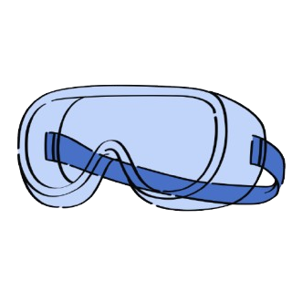

UNIVERSITY OF WATERLOO MAP!!!
WATER WATER WATER
LOO LOO LOO !!!
Welcome to the University of Waterloo!
Find the campus map sorted by faculty below:
LEGEND:
Arts
Health
Environment
Engineering
Math

Science
Other
Search buildings
Clear
All
Arts
Health
Environment
Engineering
Math
Science
Other
Showing all buildings